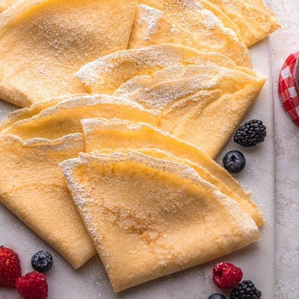

Crepes

I am a French Canadian from Montreal, this recipe is one of the first ones that I learned as a child growing up and can either be served traditional style with REAL maple syrup on top or cold with ice cream rolled into it and chocolate syrup on top as a dessert.
Ingredients
- 1 cup all-purpose flour
- 1 egg
- 2 cups milk
Steps
- In a mixing bowl, combine flour, egg, and milk.
- Heat a large skillet or crepe pan over a medium-high heat. Spray the pan with non-stick cooking spray. Pour about 1/3 cup of batter into the pan, lift the pan and turn it by rotating your wrist, spreading a PAPER THIN amount in the pan. Flip the crepe when it starts to bubble. When it is finished cooking, remove it and repeat this process with the remaining batter.